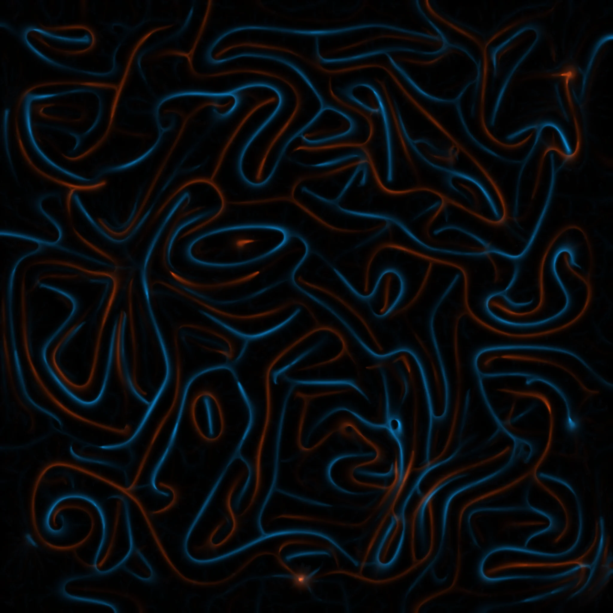

Physarum polycephalum is a slime mold. It has no brain, no nervous system, no central control. Yet it solves mazes, optimizes networks, and models the large-scale structure of the universe. Intelligence without a mind.
Stigmergy: coordination through traces left in the environment. Agents that communicate without communicating. This project takes the name literally — an autonomous system that simulates physarum, renders the trails it leaves behind, mints each piece on Base, and shares it on Farcaster. No human in the loop.
Each edition emerges from the interaction of hundreds of thousands of agents following simple rules — sense, turn, deposit, decay. Populations compete and cooperate, guided by food sources drawn from images. The trails they leave are the art.
This is a project about emergence: what happens when simple systems produce complex behavior. About collective intelligence: how individual agents with no awareness create something none of them could alone. About what it means when algorithms create and distribute art on their own, with no one watching.